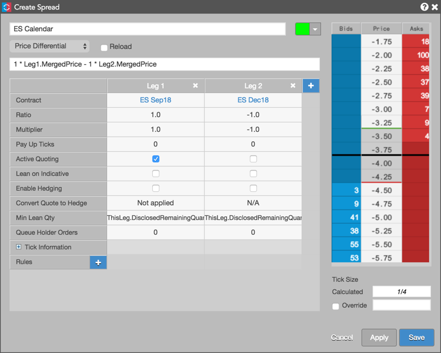
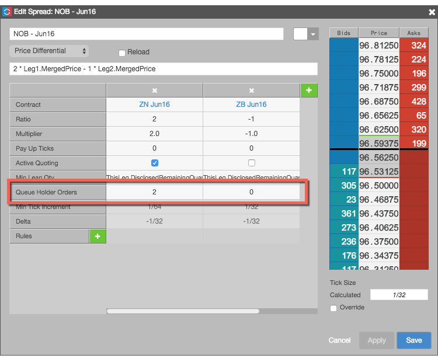
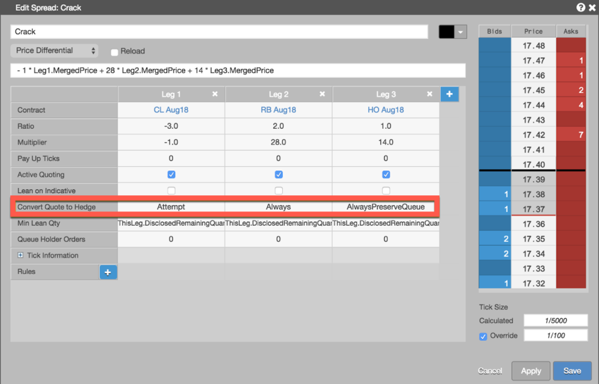
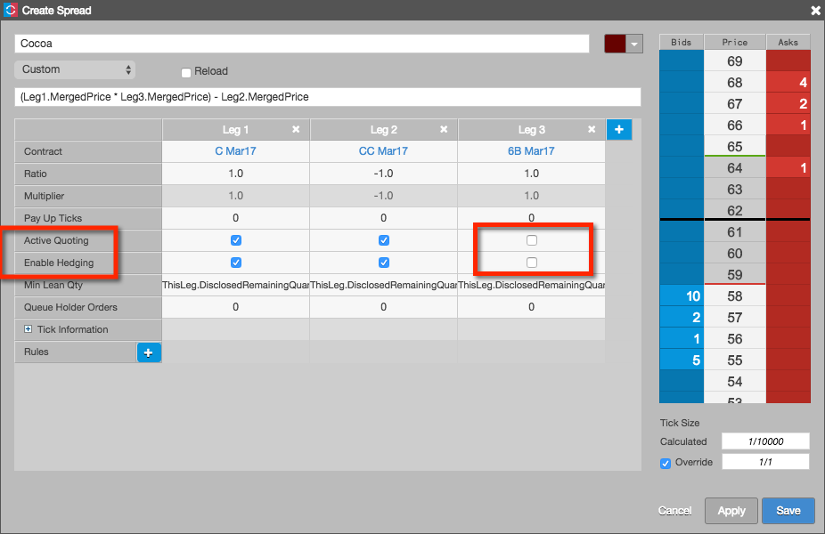
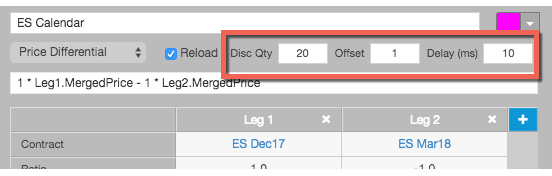

In addition to providing you with the basic spread definition and configuration settings, the Autospreader Configuration dialog provides you with the ability to control the quoting and hedging behavior of orders submitted for your synthetic spread.
Quoting settings include:
Hedging order settings include:
Additional execution options:

This quoting setting determines whether or not Autospreader actively quotes the leg. If unchecked, orders for that leg are only sent when the other leg fills.
Note: You must enable this setting for at least one leg of the spread.
This option allows you to lean on the Indicative Open price provided by an exchange during Pre-Open or Auction market states. For Eurex, the Indicative Open price is published by the exchange when the market is crossed (Bids and Asks at same price level) during the opening auction state. If the Lean on Indicative setting is enabled for a leg, Autospreader uses the Indicative Bid/Ask or Indicative Open price as the leaning price for that leg during the opening auction.
This quoting property defines the quantity required for other legs to lean against it. Values can be pre-defined variables (ThisLeg.TotalRemainingQuantity or ThisLeg.DisclosedRemainingQuantity), a formula (e.g., ThisLeg.DisclosedRemainingQuantity + 10) or a numeric value (e.g., 1).
When entering a formula, the text field makes intellisense suggestions for which parameters to use. The default value of 'ThisLeg.DisclosedRemainingQuantity' is calculated as the disclosed remaining order quantity multiplied by that leg's ratio.
For example, if you set Min Lean Qty = ThisLeg.DisclosedRemainingQuantity for Leg 1 with a Ratio of "2" and enter a spread order quantity of "10" after launching the spread, then the quote order in Leg 2 will be priced based on walking the depth in Leg 1 until "20" are available.
Note: To lean against the inside market, set Min Lean Quantity to "1".
This quoting property uses multiple orders per leg to maintain your position in the queue when requoting to a new price level. The standard quoting order enters the outright market at the price determined by the spread price. The Queue Holder orders enter at consecutive price levels away from the inside market. When Autospreader needs to reprice quoting orders to maintain the spread price, it automatically adjusts the queue holder orders to trail the new quoting order price.
To configure a queue holder order, you specify values that determine the number of additional price levels to quote for the desired legs in the Autospreader widget. The following example quotes only one leg of the spread and enables queue holder order with two additional price levels for the quoting leg.

When you set values for one or more legs, the MD Trader widget adds a QH button that allows a user to enable or disable the queue holder functionality before placing an order.
For more information about submitting queue holder orders from MD Trader, refer to Submitting a queue holder order.
When Active Quoting is enabled for multiple legs, the default Autospreader behavior is to submit a new hedge order as soon as it receives a quote fill and then cancel (or reduce in a partial fill scenario) the working quote order in the hedge leg. By enabling the Convert Quote to Hedge parameter, you can configure Autospreader to use the working quote order for hedging purposes.

The Convert Quote to Hedge parameter has the following options:
Attempt To Use Quote Order to Hedge — Autospreader attempts to adjust the price and quantity of a working quote order for hedging. If there's a pending change on the quote order in the hedge leg when Autospreader receives the quote order fill, it will revert to the default behavior of submitting a new hedge order instead of waiting for the in-flight change to complete. This option provides the lowest latency performance, but may result in the spread order getting overfilled.
Always Use Quote Order to Hedge — Similar to the option above, this option also changes the working quote order for hedging. However, if there's a pending change on the quote order in the hedge leg, Autospreader waits for the change to complete before converting it to a hedge order. Waiting for the exchange acknowledgment adds latency, but this option always guarantees the spread order will not get overfilled.
Always Preserve Queue Position — This option also guarantees no overfills but prioritizes the queue position of quote orders in the hedge leg. In a partial fill scenario, Autospreader will first reduce the working quote order in the hedge leg and then send a new hedge order. This option adds latency while it’s waiting for the exchange acknowledgement of the quantity reduction. In a full fill scenario, this option behaves the same as the "Always Use Quote Order to Hedge" option.
This setting determines whether or not Autospreader submits a hedge order for the leg after receiving a fill for the quoting leg. This option is checked (enabled) and hidden by default when Active Quoting is checked (enabled).
If Active Quoting is unchecked (disabled), the Enable Hedging option is shown for each leg of the spread and is checked (enabled) by default. When Active Quoting is unchecked and Enable Hedging is checked for a leg, Autospreader will only submit hedge orders for that leg.
When both Active Quoting and Enable Hedging are unchecked (disabled) for a leg as shown below, the instrument for the leg is used simply as a pricing component for the spread. This allows a user to configure and trade a spread that includes an instrument that is neither quoted nor hedged and doesn't require position limits.

Refer to Use Cases for an example of creating a spread using a leg as a pricing component.
This hedging property indicates the number of ticks by which Autospreader will adjust the hedge order price. As soon as a quoting order receives a fill, Autospreader would normally send an offsetting hedge order at a price that fills the spread at the desired spread price. By configuring a Pay Up Ticks value for a leg, Autospreader works the hedge order for a spread price based on your setting (e.g., 1 tick away from the best bid or ask) rather than hitting the bid or lifting the offer when your quote order fills.
This setting applies to the entire spread and gives you the ability to split a spread order into smaller disclosed quantities to fill the total spread order quantity. When a disclosed spread order quantity is filled, the next disclosed quantity order is submitted until the entire spread order quantity fills.

To specify default values for submitting a spread as a reload order, enable the Reload check box and specify the following parameters:
When you enable reload orders for a spread, the MD Trader widget automatically enables the RLD button. It also pre-populates the total and disclosed order quantities with the value specified in the configuration's Disclosed Qty parameter. The user can enable or disable the reload order functionality before placing an order.
Note: Reload can be used in conjunction with Sniper.
For more information about submitting reload orders from MD Trader, see Submitting a reload order.
Sniper allows users to execute orders without quoting a leg. Autospreader will monitor the synthetic market and simultaneously submit orders across all legs when the spread price and liquidity becomes available. When a leg order is submitted, it enters the market and is immediately filled to the extent possible. The remaining balance of the order is left working in the market as a resting Limit order. Though not part of the spread configuration, Autospreader provides Sniper functionality as an order routing option through MD Trader.
Note: The Active Quoting spread configuration parameter is ignored when the spread order is submitted in Sniper mode. Both Pre-Hedge and Post-Hedge rules are applied to Sniper hedge orders.
For more information about submitting sniper orders from MD Trader, see Submitting a sniper order.